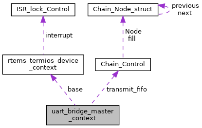

|
RTEMS
5.0.0
|
|
RTEMS
5.0.0
|
#include <uart-bridge.h>

Data Fields | |
| rtems_termios_device_context | base |
| const char * | device_path |
| intercom_type | type |
| rtems_id | transmit_task |
| rtems_chain_control | transmit_fifo |
Definition at line 44 of file uart-bridge.h.
| rtems_termios_device_context uart_bridge_master_context::base |
Definition at line 45 of file uart-bridge.h.
| const char* uart_bridge_master_context::device_path |
Definition at line 46 of file uart-bridge.h.
| rtems_chain_control uart_bridge_master_context::transmit_fifo |
Definition at line 49 of file uart-bridge.h.
| rtems_id uart_bridge_master_context::transmit_task |
Definition at line 48 of file uart-bridge.h.
| intercom_type uart_bridge_master_context::type |
Definition at line 47 of file uart-bridge.h.
Referenced by qoriq_uart_bridge_master_probe().
 1.8.17
1.8.17